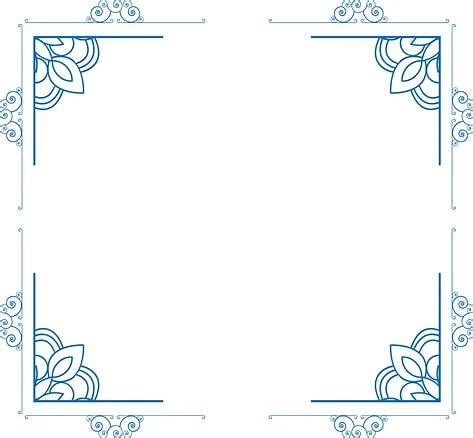

Here, the middle section of the image are repeat to create the border:
border-image url(border.jpeg) 50 round:
border-image url(border.jpeg) 20% round:
border-image url(border.jpeg) 30% round:
Here is the original image:
Note: Internet Explorer 10, and earlier versions, do not support the borderimage Property